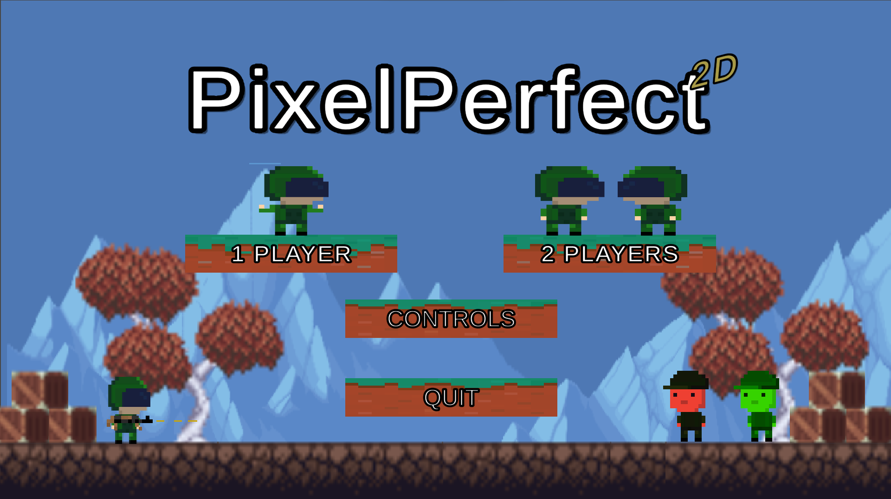

Hoe het werkt:
____________________________
Als je het spel start, zie je het hoofdmenu. In het hoofdmenu kun je op de knop CONTROLS drukken en de beweging van de speler zien. Als je het spel wilt spelen, kun je op 1 PLAYER of 2 PLAYER drukken. In 1 speler moet je vijanden doden, munten en edelstenen verzamelen. En het belangrijkste doel is om de finish te halen. In de spelmodus voor 2 spelers kun je tegen een vriend spelen. De eerste persoon die elkaar vermoordt, wint.
PixelPerfect2DGemaakt met:
Ik heb dit spel in Unity gemaakt. Ik heb de code C# gebruikt. En ik gebruikte het programma Visual Studio 2019.
